This explores computational face morphing techniques through several key components: correspondence point definition, triangulation-based warping, and cross-dissolving. I demonstrate these concepts by morphing between my face and Professor Satish Rao's, computing population averages using the FEI Face Database, and creating caricatures through extrapolation from the mean. This culminates with explorations in automatic correspondence detection and cross-demographic morphing experiments.
Key techniques implemented: Delaunay triangulation, affine transformations, bilinear interpolation, and geometric warping algorithms.
I define 64 corresponding points between both images to establish the geometric relationship needed for morphing.
The two images used for face morphing are shown below.
The correspondence points and their Delaunay triangulation are visualized below.
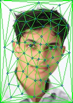
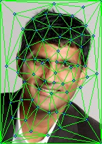
I create a mid-way face between Professor Rao and myself by averaging both geometry and appearance.
Each triangle from both triangulations is transformed to its midpoint position using affine transformations computed through change-of-basis matrices. The pixel values are then cross-dissolved at a 50% blend ratio.

I extend the mid-way face concept to create a smooth morphing sequence. The warping and cross-dissolving parameters vary linearly from 0 to 1 across 45 frames, where 0 represents my face and 1 represents Professor Rao's face.
Observations: The morph achieves a smooth transition overall. I included correspondence points on our shirts to improve the warping quality. However, some areas could be improved: the left sides appear slightly jarring due to insufficient correspondence points, and hair morphing becomes unnatural in the later frames. Despite these minor issues, the result demonstrates effective face morphing techniques.
Using the FEI Face Database, I compute the average face and average geometry of the population, then apply these transformations to individual faces.
The average face and geometry computed from the FEI database:
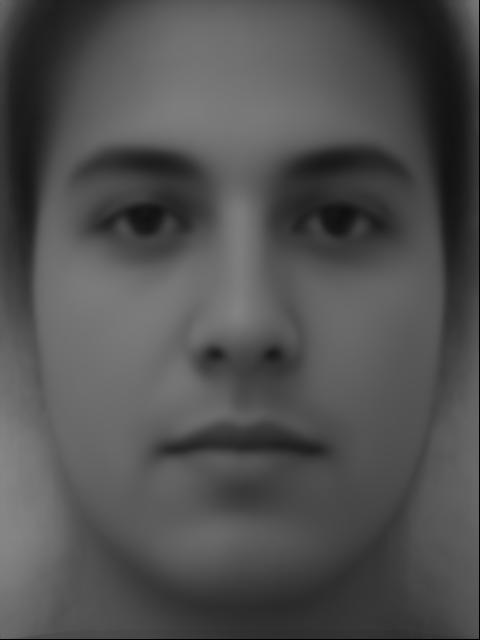
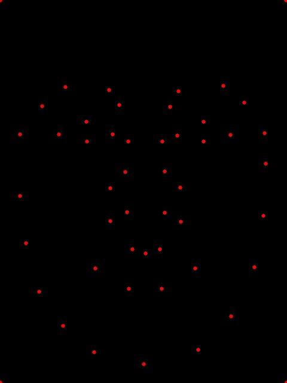
Examples of individuals from the dataset warped to the average geometry:
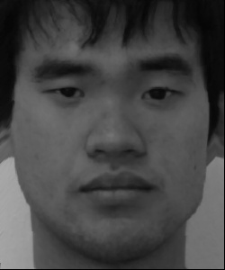
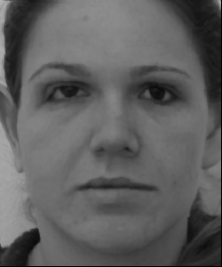
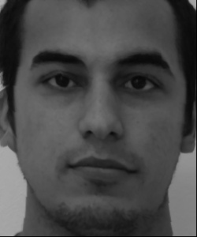
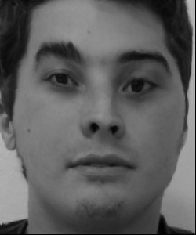
Most transformations appear natural given the limited correspondence points used. Subject 50a appears distorted because the original image shows the person facing slightly upward, making it an outlier in the dataset's pose distribution.
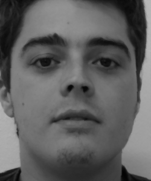
Subject 20a demonstrates the most successful transformation:
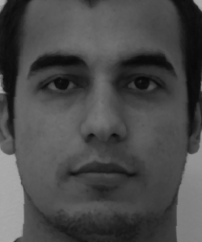
The transformation is so natural that only the ears reveal it's a different person!
I now demonstrate bidirectional warping: (1) my 11th grade photo warped to average geometry, and (2) the average face warped to my photo's geometry.
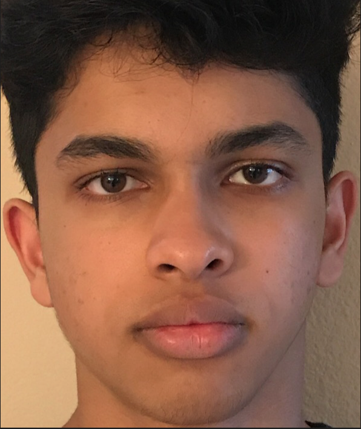
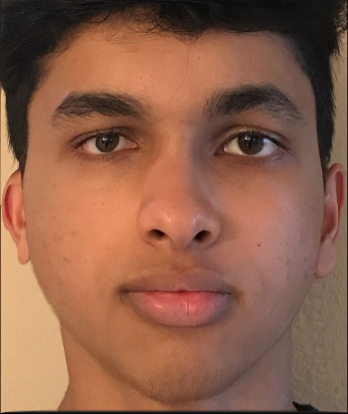
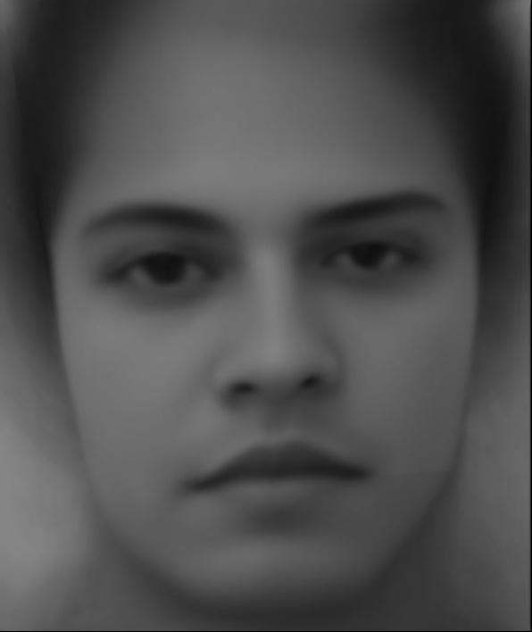
I create caricatures by extrapolating beyond the population mean using the formula: p + α(q - p), where p is the population mean, q is my face, and α controls the extrapolation strength.
Results with varying α values:
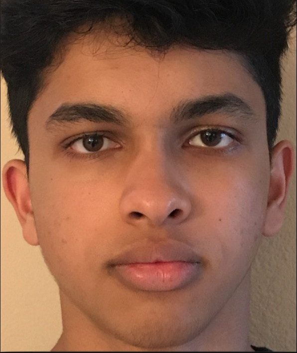
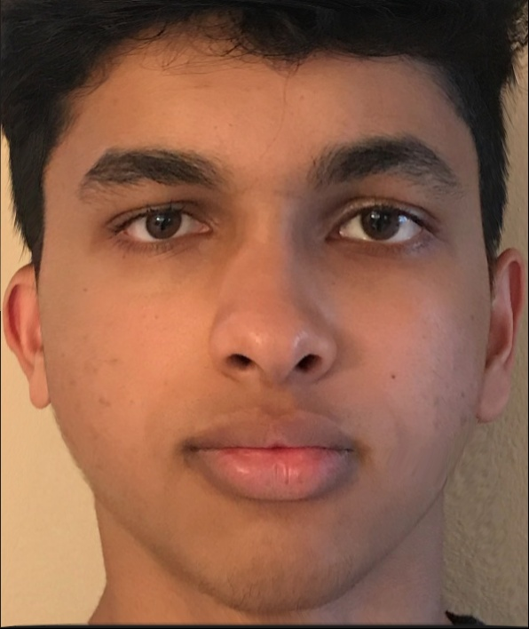
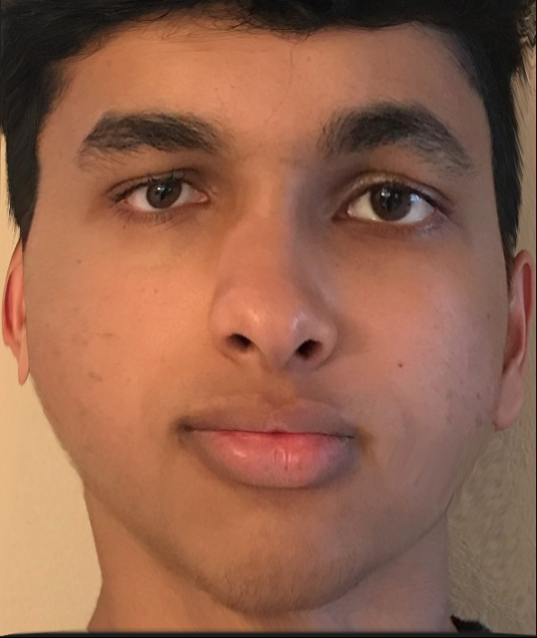
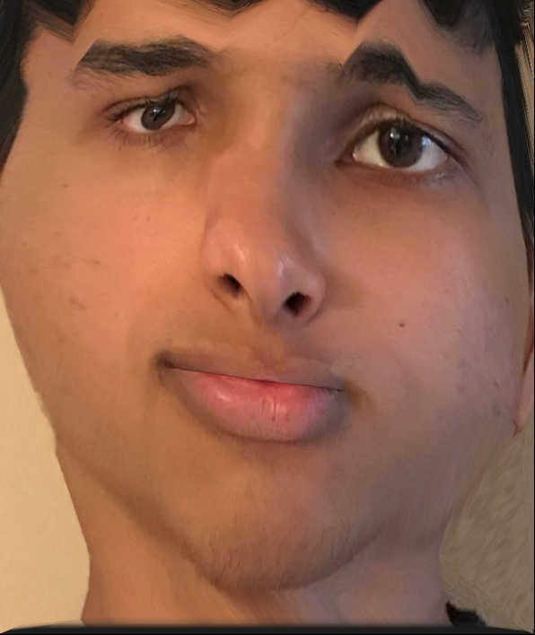
To address the time-consuming nature of manual point annotation, I implemented automatic correspondence detection using Python libraries. This eliminates the need for manual point selection and reduces backtracking when additional points are needed.
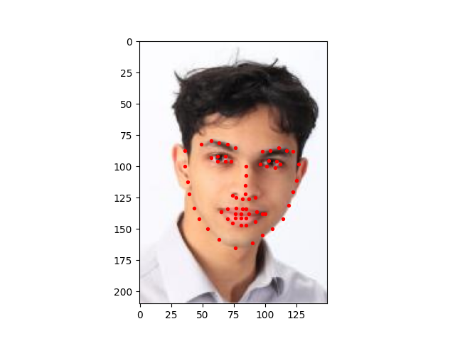
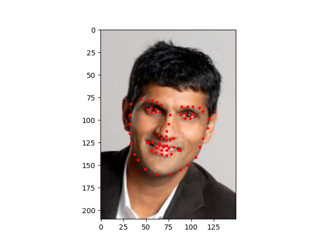
I experiment with changing both gender and ethnicity by morphing my face (Indian male) with the average face of a Turkish woman.
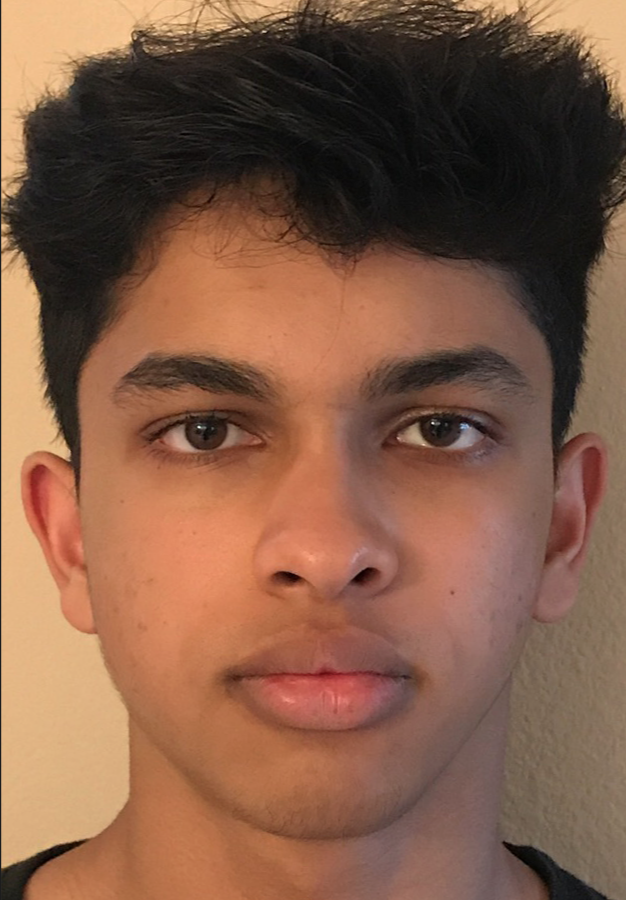
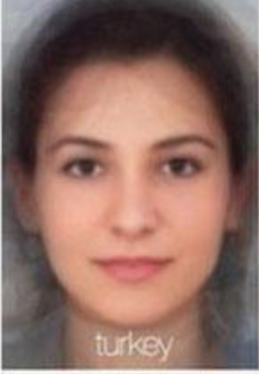
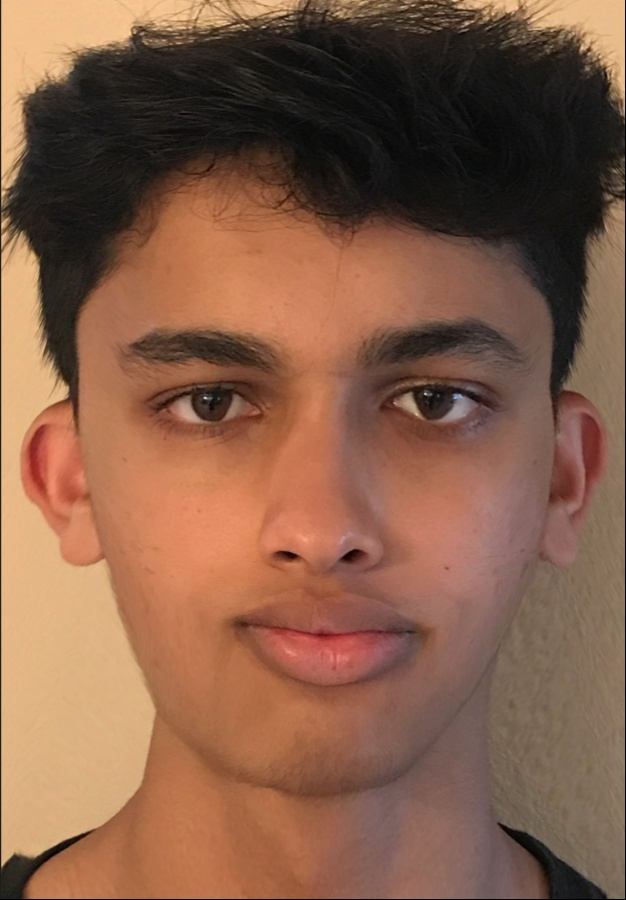
While the result shows some distortion, this is primarily due to differences in image quality and focal points between the source images. My photo has a notably crooked nose and higher focal point compared to the reference image. Better correspondence point selection could improve the results.
Note that the earlier morphing with the FEI database effectively demonstrated morphing from Indian to Brazilian demographics, showing the technique's versatility across different ethnic groups.